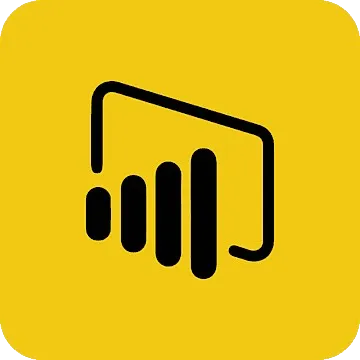
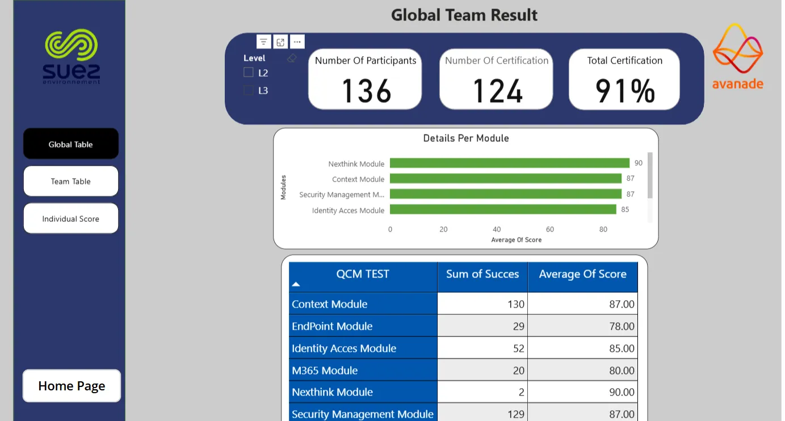
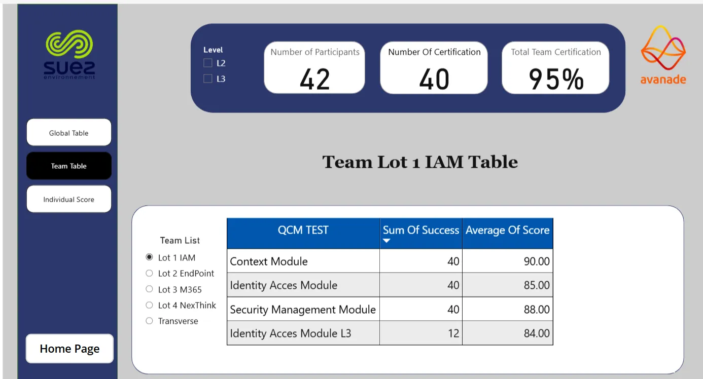
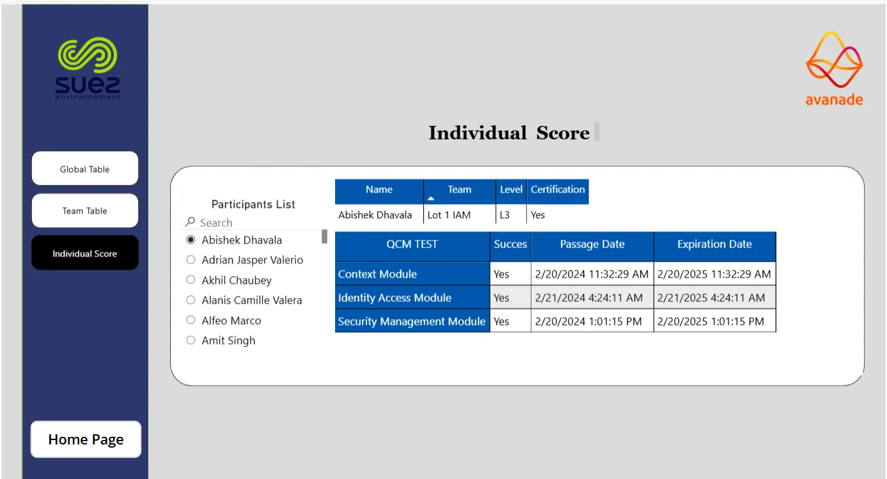
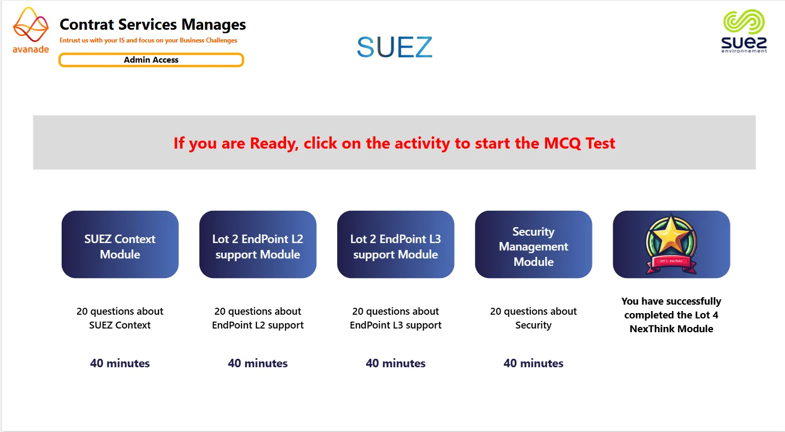

Microsoft · 2023
SUEZ
tableau de bord des certifications
Dashboard créé chez Avanade pour SUEZ, pour suivre les certifications Power Platform à travers les équipes. Cette page met en avant les vues clés utilisées pour suivre l'avancement, repérer les manques et préparer les revues de direction.

L'idée
Cas client
03 — Le résultat
Suivi centralisé de l'avancement des certifications pour plusieurs équipes
Meilleure visibilité pour les managers, avec des KPI clairs et des vues détaillées (drill-down)
Reporting manuel réduit en consolidant les données dans un seul dashboard
Où ça en est
Projet interne développé chez Avanade — accès en ligne plus disponible.
Galerie




Construit avec
Power BIPower QueryDAX